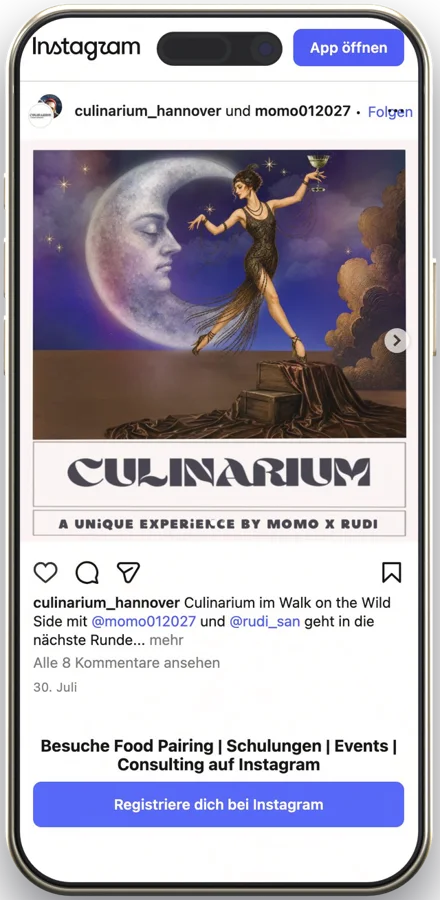

01
Einen Platz bekommt, wer schreibt und per PayPal zahlt.
WoBeitrag vom 29. Juli 2026: «Tickets ausschließlich per Vorverkauf über PayPal. Schreibt uns hierzu gerne eine Nachricht.» Der Abend war danach ausgebucht.
- Für eure Gäste
- Wer zu einem Abend will, schreibt erst eine Nachricht und wartet auf die Antwort. Einen Beleg zum Ticket gibt es nicht, eine Warteliste auch nicht.
- Für euch
- Jede Buchung ist ein Gespräch, das jemand von euch führen muss, oft spät am Abend. Wer nach dem Ausverkauf fragt, geht wieder.
- Was wir tun würden
- Buchen auf der Seite: Abend wählen, Plätze wählen, zahlen, das Ticket kommt per Mail. Ist ein Abend voll, trägt sich der Gast auf die Warteliste ein.